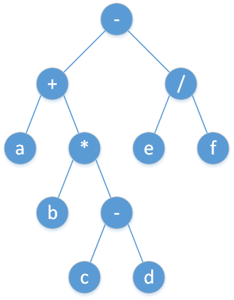

Expression
表达式求值要解决的问题一般是输入一个字符串表示的表达式，要求输出它的值．当然也有变种比如表达式中是否包含括号，指数运算，含多少变量，判断多个表达式是否等价，等等．
表达式一般需要先进行语法分析（grammer parsing）再求值，也可以边分析边求值，语法分析的作用是检查输入的字符串是否是一个合法的表达式，一般使用语法分析器（parser）解决．
表达式包含两类字符：运算数和运算符．对于长度为 $n$ 的表达式，借助合适的分析方法，可以在 $O(n)$ 的时间复杂度内完成分析与求值．
表达式树与逆波兰表达式
一种递归分析表达式的方法是，将表达式当成普通的语法规则进行分析，分析后拆分成如图所示的表达式树，然后在树结构上自底向上进行运算．

表达式树上进行 树的遍历 可以得到不同类型的表达式．算术表达式分为三种，分别是前缀表达式、中缀表达式、后缀表达式．中缀表达式是日常生活中最常用的表达式；后缀表达式是计算机容易理解的表达式．
- 前序遍历对应前缀表达式（波兰式）
- 中序遍历对应中缀表达式
- 后序遍历对应后缀表达式（逆波兰式）
逆波兰表达式（后缀表达式）是书写数学表达式的一种形式，其中运算符位于其操作数之后．例如，以下表达式：
$$ a+bcd+(e-f)(gh+i) $$
可以用逆波兰表达式书写：
$$ abcd+ef-ghi++ $$
因此，逆波兰表达式与表达式树一一对应．逆波兰表达式不需要括号表示，它的运算顺序是唯一确定的．
逆波兰表达式的方便之处在于很容易在线性时间内计算．举个例子：在逆波兰表达式 $3~2~~1~-$ 中，首先计算 $3 \times 2 = 6$（使用最后一个运算符，即栈顶运算符），然后计算 $6 - 1 = 5$．可以看到：对于一个逆波兰表达式，只需要 维护一个数字栈，每次遇到一个运算符，就取出两个栈顶元素，将运算结果重新压入栈中*．最后，栈中唯一一个元素就是该逆波兰表达式的运算结果．该算法拥有 $O(n)$ 的时间复杂度．
采用递归的办法分析表达式是否成功，依赖于语法规则的设计是否合理，即，是否能够成功地得到指定的表达式树．例如：
$$ a+b*c $$
根据加号与乘号的运算优先级不同，该中缀表达式可能转化为两种不同的表达式树．可见，语法规则的设计高度依赖于运算符的优先级．借助运算符的优先级设计相应递归的语法规则，事实上是一件不容易的事情．
下文介绍的办法将运算符与它的优先级视为一个整体，采用非递归的办法，直接根据运算符的优先级来分析与计算表达式．
只含左结合的二元运算符的含括号表达式
考虑简化的问题．假设所有运算符都是二元的：所有运算符都有两个参数．并且所有运算符都是左结合的：如果运算符的优先级相等，则从左到右执行．允许使用括号．
对于这种类型的中缀表达式的计算，可以将其转化为后缀表达式再进行计算．定义两个 栈 来分别存储运算符和运算数，每当遇到一个数直接放进运算数栈．每个运算符块对应于一对括号，运算符栈只对于运算符块的内部单调．每当遇到一个操作符时，要查找运算符栈中最顶部运算符块中的元素，在运算符块的内部保持运算符按照优先级降序进行适当的弹出操作，弹出的同时求出对应的子表达式的值．
以下部分用「输出」表示输出到后缀表达式，即将该数字放在运算数栈上，或者弹出运算符和两个操作数，运算后再将结果压回运算数栈上．从左到右扫描该中缀表达式：
- 如果遇到数字，直接输出该数字．
- 如果遇到左括号，那么将其放在运算符栈上．
- 如果遇到右括号，不断输出栈顶元素，直至遇到左括号，左括号出栈．换句话说，执行一对括号内的所有运算符．
- 如果遇到其他运算符，不断输出所有运算优先级大于等于当前运算符的运算符．最后，新的运算符入运算符栈．
- 在处理完整个字符串之后，一些运算符可能仍然在堆栈中，因此把栈中剩下的符号依次输出，表达式转换结束．
以下是四个运算符 $+$、$-$、$*$、$/$ 的此方法的实现：
??? note "示例代码" ```cpp
bool delim(char c) { return c == ' '; }
bool is_op(char c) { return c == '+' || c == '-' || c == '*' || c == '/'; }
int priority(char op) {
if (op == '+' || op == '-') return 1;
if (op == '*' || op == '/') return 2;
return -1;
}
void process_op(stack<int>& st, char op) { // 也可以用于计算后缀表达式
int r = st.top(); // 取出栈顶元素，注意顺序
st.pop();
int l = st.top();
st.pop();
switch (op) {
case '+':
st.push(l + r);
break;
case '-':
st.push(l - r);
break;
case '*':
st.push(l * r);
break;
case '/':
st.push(l / r);
break;
}
}
int evaluate(string& s) { // 也可以改造为中缀表达式转换后缀表达式
stack<int> st;
stack<char> op;
for (int i = 0; i < (int)s.size(); i++) {
if (delim(s[i])) continue;
if (s[i] == '(') {
op.push('('); // 2. 如果遇到左括号，那么将其放在运算符栈上
} else if (s[i] == ')') { // 3. 如果遇到右括号，执行一对括号内的所有运算符
while (op.top() != '(') {
process_op(st, op.top());
op.pop(); // 不断输出栈顶元素，直至遇到左括号
}
op.pop(); // 左括号出栈
} else if (is_op(s[i])) { // 4. 如果遇到其他运算符
char cur_op = s[i];
while (!op.empty() && priority(op.top()) >= priority(cur_op)) {
process_op(st, op.top());
op.pop(); // 不断输出所有运算优先级大于等于当前运算符的运算符
}
op.push(cur_op); // 新的运算符入运算符栈
} else { // 1. 如果遇到数字，直接输出该数字
int number = 0;
while (i < (int)s.size() && isalnum(s[i]))
number = number * 10 + s[i++] - '0';
--i;
st.push(number);
}
}
while (!op.empty()) {
process_op(st, op.top());
op.pop();
}
return st.top();
}
```
这种隐式使用逆波兰表达式计算表达式的值的算法的时间复杂度为 $O(n)$．通过稍微修改上述实现，还可以以显式形式获得逆波兰表达式．
一元运算符与右结合的运算符
现在假设表达式还包含一元运算符，即只有一个参数的运算符．一元加号和一元减号是一元运算符的常见示例．
这种情况的一个区别是，需要确定当前运算符是一元运算符还是二元运算符．
注意到，在一元运算符之前一般有另一个运算符或开括号，如果一元运算符位于表达式的最开头则没有．在二元运算符之前，总是有一个运算数或右括号．因此，可以标记下一个运算符是否一元运算符．
此外，需要以不同的方式执行一元运算符和二元运算符，让一元运算符的优先级高于所有二元运算符．应注意，一些一元运算符，例如一元加号和一元减号，实际上是右结合的．
右结合意味着，每当优先级相等时，必须从右到左计算运算符．
如上所述，一元运算符通常是右结合的．右结合运算符的另一个示例是求幂运算符．对于 $a \wedge b \wedge c$，通常被视为 $a^{b^c}$，而不是 $(a^b)^c$．
为了正确地处理这类运算符，相应的改动是，如果优先级相等，将推迟运算符的出栈操作．
需要改动的代码如下．将：
while (!op.empty() && priority(op.top()) >= priority(cur_op))
换成
while (!op.empty() &&
((left_assoc(cur_op) && priority(op.top()) >= priority(cur_op)) ||
(!left_assoc(cur_op) && priority(op.top()) > priority(cur_op))))
其中 left_assoc 是一个函数，它决定运算符是否为左结合的．
这里是二进制运算符 $+$、$-$、$*$、$/$ 和一元运算符 $+$ 和 $-$ 的实现：
??? note "示例代码" ```cpp
bool delim(char c) { return c == ' '; }
bool is_op(char c) { return c == '+' || c == '-' || c == '*' || c == '/'; }
bool is_unary(char c) { return c == '+' || c == '-'; }
int priority(char op) {
if (op < 0) // unary operator
return 3;
if (op == '+' || op == '-') return 1;
if (op == '*' || op == '/') return 2;
return -1;
}
void process_op(stack<int>& st, char op) {
if (op < 0) {
int l = st.top();
st.pop();
switch (-op) {
case '+':
st.push(l);
break;
case '-':
st.push(-l);
break;
}
} else { // 取出栈顶元素，注意顺序
int r = st.top();
st.pop();
int l = st.top();
st.pop();
switch (op) {
case '+':
st.push(l + r);
break;
case '-':
st.push(l - r);
break;
case '*':
st.push(l * r);
break;
case '/':
st.push(l / r);
break;
}
}
}
int evaluate(string& s) {
stack<int> st;
stack<char> op;
bool may_be_unary = true;
for (int i = 0; i < (int)s.size(); i++) {
if (delim(s[i])) continue;
if (s[i] == '(') {
op.push('('); // 2. 如果遇到左括号，那么将其放在运算符栈上
may_be_unary = true;
} else if (s[i] == ')') { // 3. 如果遇到右括号，执行一对括号内的所有运算符
while (op.top() != '(') {
process_op(st, op.top());
op.pop(); // 不断输出栈顶元素，直至遇到左括号
}
op.pop(); // 左括号出栈
may_be_unary = false;
} else if (is_op(s[i])) { // 4. 如果遇到其他运算符
char cur_op = s[i];
if (may_be_unary && is_unary(cur_op)) cur_op = -cur_op;
while (!op.empty() &&
((cur_op >= 0 && priority(op.top()) >= priority(cur_op)) ||
(cur_op < 0 && priority(op.top()) > priority(cur_op)))) {
process_op(st, op.top());
op.pop(); // 不断输出所有运算优先级大于等于当前运算符的运算符
}
op.push(cur_op); // 新的运算符入运算符栈
may_be_unary = true;
} else { // 1. 如果遇到数字，直接输出该数字
int number = 0;
while (i < (int)s.size() && isalnum(s[i]))
number = number * 10 + s[i++] - '0';
--i;
st.push(number);
may_be_unary = false;
}
}
while (!op.empty()) {
process_op(st, op.top());
op.pop();
}
return st.top();
}
```
参考资料
本页面主要译自博文 Разбор выражений. Обратная польская нотация 与其英文翻译版 Expression parsing．其中俄文版版权协议为 Public Domain + Leave a Link；英文版版权协议为 CC-BY-SA 4.0．